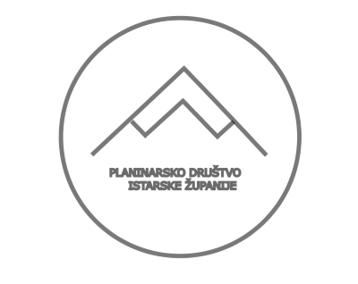

INKSCAPE
Za izradu LOGO-a koristio sam program INKSCAPE.
- Prvo sam kreirao novu datoteku pod opcijom "Datoteka" koja se nalazi u gornjoj
izborničkoj traci.
- Nakon toga stisnuo sam CTRL+SHIFT i opciju "Stvori kružnice, elipse i lukove" te sam dobio jedan krug ispunjen crnom bojom
- Nakon toga u doljnjem lijevom kutu ekrana kliknuo sam opciju "Bez boje" te sam na taj način dobio krug koji je postao kompletno bijeli
te nije bio vidljiv na ekranu.
- Zatim sam klinuo SHIFT+CRNU BOJU te sam kao rezultat dobio kružnicu čiji je rub bio crne boje, a unutrašnjost bijele boje
- Nakon toga, u glavnoj izborničkoj traci klinuo sam opciju staza, te sam izabrao opciju "Objekt u stazu" te sam sa srane dobio Soj jedan
odnosno dobio sam prvi dio mog logoa (Krug)
- Zatim sam označio moj dobiveni krug te sam klinu CTRL+SHIT+F te sam pod opcijom "Stil linije" odabrao da mi debljina kružnice
bude u pikselima, te sam sam 1 px postavio debljinu na 5 px
- Sljedeći korak je bila izrada planine. Kliknuo sam CTRL+SHIFT i opciju "Stvori pravokutnik i kvadrat" te sam napravio kvadrat sličan veličini
kružnice te sam ga zarotirao za 90 stupnjeva
- Zatim sam duplicirao naš kvadart dva put tako što sam klinuo CTRL+D dva puta dok je kvadrat bio označen
- Spojio sam dva duplicirana kvadarata malim dijelom te sam kliknuo opciju "Staza", "Unija", te sam dobio dva ujedinjena kvadrata
- Smanjio sam ujedninjeni kvadrat te sam ga stavio iznad onog prvog kvadrata te sam selectao oba objekta, otišao na opciju "staza" i "izreži stazu"
- Maknuo sam gornji dio ujedinjenih kvadrata te sam dobio oblik nalik kvadratu sa snijegom na vrhu
- Kliknuo sam CTRL+F2 te sam označio donji dio planine, zatim sam otišao na opciju "Staze" i "izreži stazu"
- Dobio sam planinu sa snijegom na vrhu te sam je ubacio unutar kruga
- Nakon toga unutar kruga, ispod planine klinuo sam tipku T te sam unesao tekst Planinarsko društvo istarske županije i poravnao sam
tekst na sredinu
- Nakon toga spremio sam svoj rad koji možete vidjeti u slijedećem koraku
